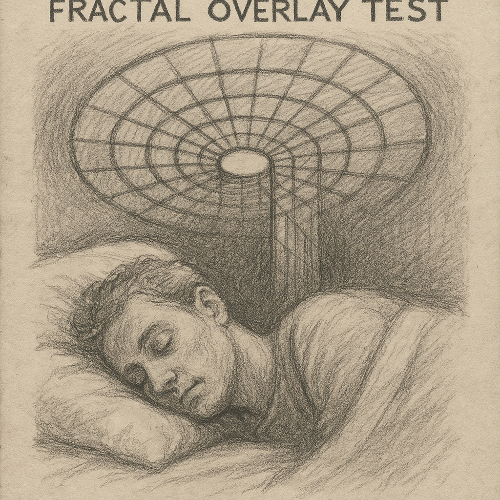
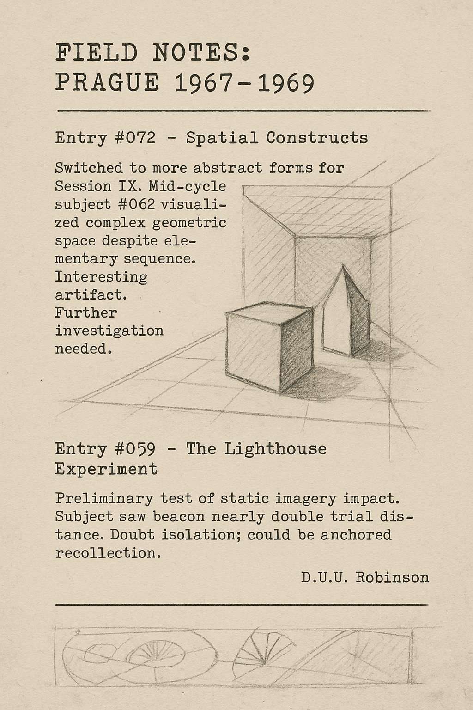

Trials with subjects exposed to card imagery prior to sleep suggest subconscious pattern sensitivity. Card #7 ("The Staircase of Red Birds") produced recurring dream themes across participants, notably references to "counting" and "ascending." May indicate partial symbolic encoding.
Three subjects reported numeric sequences in the same dream cycle after focusing on Card #13 ("The Window with No View"). Numbers were inconsistent but clustered around mid-deck values. Further control testing planned.
A visiting U.S. liaison mentioned similarity to early remote cognition experiments. Possible crossover interest from defense sector. Ethics concerns raised, but no official inquiry. Keep notes vague in final report.
Subjects exposed to alternating spiral and mirror imagery exhibited increased theta wave activity. One subject described a "humming oval" in their dream matching the induction symbol. Others reported being "watched" from behind their own reflections.
Subjects were played a whisper loop of the phrase “find the red door” beneath white noise. Four reported encountering a red door within dream sequences — often at the end of distorted hallways. One claimed: “It wouldn't open until I spoke.”
An experimental chess set with altered rules was placed beside sleeping participants. Subjects who memorized game states reported dreams of self-competition. No strategic consistency. The project was retired due to ambiguous results and high subject frustration.
Projection of a prime-based fractal pattern above the bed led to architectural dreamscapes — subjects spoke of nested rooms, recursive stairwells, and “houses within houses.” One sketched a room he claimed was “infinitely folding inward.”
A velvet envelope containing a single gold thread was given to Participant A before sleep. The next day, they described dreaming of a puppet theater lit from beneath. The puppets were speaking in reversed Czech. No memory of the message remained upon waking.
